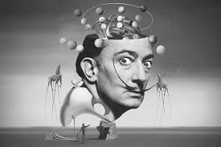
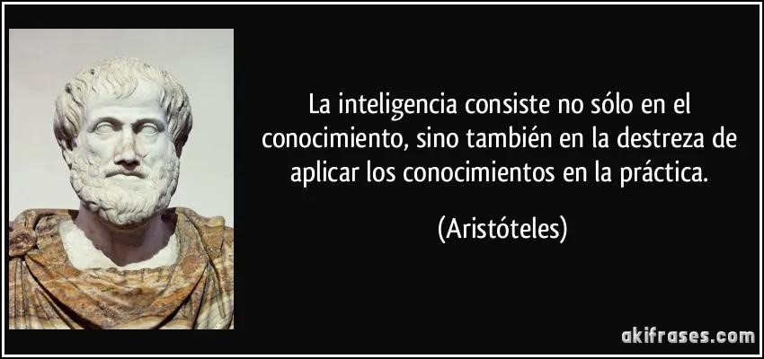

Filosofía de la emoción
La filosofía de la emoción se remonta a las antiguas tradiciones filosóficas, donde las emociones eran vistas de diversas maneras, desde obstáculos a la razón hasta partes integrales de la experiencia humana. Este estudio filosófico ha evolucionado hasta abarcar no solo preguntas sobre la naturaleza de las emociones, sino también sobre su función en nuestra vida moral, nuestra identidad y nuestras relaciones.

Desarrollo Histórico
• Filosofía Clásica: Los filósofos griegos como Sócrates, Platón y Aristóteles reflexionaron sobre las emociones, considerando que estas eran impulsos que podían desviar la razón. Para Platón, las emociones eran irracionales y podían ser peligrosas, mientras que Aristóteles las valoraba como respuestas potencialmente racionales que podían alinearse con la virtud y el bien.
• Estoicismo: En la filosofía estoica, las emociones eran vistas como juicios erróneos sobre el mundo que nos desvían del bienestar; por ello, los estoicos propusieron el ideal de la apatía, es decir, una vida libre de emociones perturbadoras.
• Filosofía Moderna: En el siglo XVII, filósofos como René Descartes y David Hume iniciaron una exploración más psicológica de las emociones. Descartes las describió como “movimientos” del alma, mientras que Hume argumentó que las emociones (o "pasiones") son la base de la motivación humana y que la razón es su servidora.
• Filosofía Contemporánea: A finales del siglo XX y en el XXI, las emociones comenzaron a entenderse como fenómenos complejos, involucrando tanto el cuerpo como la mente, y relacionados con nuestra percepción del valor y el significado.
Modelos Filosóficos de la Emoción
• Teoría Cognitiva: Sostiene que las emociones incluyen componentes evaluativos y juicios sobre el valor de las situaciones. Por ejemplo, sentimos tristeza o alegría en respuesta a cómo evaluamos las situaciones, ya sea como pérdidas o como logros.
• Teoría del Sentimiento: Según esta teoría, las emociones son principalmente experiencias subjetivas de placer o dolor y están menos vinculadas a juicios racionales. William James fue un defensor temprano de esta idea, sugiriendo que sentimos emociones debido a nuestras respuestas fisiológicas a los estímulos
• Teoría de la Expresión: Esta teoría plantea que las emociones tienen una función comunicativa, tanto para uno mismo como para los demás. Nuestras expresiones emocionales pueden ser intencionadas o automáticas y transmiten nuestros sentimientos internos y deseos.
Importancia de las Emociones en la Vida Humana
• Valoración y Significado: Las emociones nos permiten reaccionar con relevancia ante el mundo, guiándonos hacia aquello que es importante. Nos conectan con nuestros valores y creencias, y nos ayudan a formar un juicio sobre la realidad
• Identidad Personal: Las emociones contribuyen a la construcción de la identidad. Nuestras emociones y las experiencias que valoramos y recordamos están ligadas a cómo nos entendemos a nosotros mismos.
• Ética y Moralidad: Las emociones como la compasión y la empatía son fundamentales en nuestra moralidad, ya que nos motivan a considerar el bienestar de los demás.

Ejemplos de filosofía de la emoción
1. Amor y Juicio de Valor: Imagina que alguien se enamora de una persona. Desde la perspectiva de la filosofía de la emoción, esta emoción puede entenderse como un juicio evaluativo. El enamorado no solo siente atracción o placer, sino que valora profundamente a la otra persona y la considera importante para su vida. Este tipo de emoción da forma a su identidad y a sus decisiones, como su disposición a hacer sacrificios o cambios por el bienestar de la otra persona.
2. Indignación Moral: Una persona que presencia una injusticia –por ejemplo, el maltrato de un animal o una acción corrupta en su comunidad– experimenta indignación. En filosofía, esta emoción se interpreta como una respuesta moral que refleja los valores y principios éticos de la persona. La indignación no es solo una reacción inmediata, sino una expresión de su percepción de lo que es justo o injusto en el mundo.
3. Autenticidad y Expresión Emocional: Supón que alguien asiste al funeral de un ser querido. Siente tristeza profunda, pero en lugar de mostrar su dolor, elige mantenerse en calma por respeto a los demás asistentes o para no aumentar su propio sufrimiento. Desde una perspectiva filosófica, surge la pregunta de si reprimir las lágrimas es ser menos auténtico consigo mismo o si es una forma de regulación emocional que permite honrar a los demás. Esta reflexión sobre la autenticidad emocional y su valor es un tema central en la filosofía de la emoción
Regulación Emocional
La regulación emocional es un proceso psicológico esencial para gestionar nuestras respuestas emocionales, y ha sido un foco de estudio en psicología y neurociencia. La capacidad de regular las emociones se ha demostrado como un factor crucial para el bienestar, las relaciones y la adaptación personal
Fundamentos de la Regulación Emocional
• Definición y Propósito: La regulación emocional es la capacidad de influir en cómo experimentamos y expresamos nuestras emociones. Involucra tanto procesos conscientes como inconscientes que nos ayudan a responder de manera efectiva en diferentes situaciones.
• Importancia en la Adaptación: La regulación emocional es fundamental para la adaptación en la vida cotidiana. Nos ayuda a evitar respuestas desadaptativas y a manejar de manera saludable las emociones que pueden ser intensas, como el enojo o la tristeza.
Estrategias de Regulación Emocional
• Reevaluación Cognitiva: Consiste en reinterpretar una situación de forma que cambie su significado emocional. Esta estrategia es útil para reducir la intensidad emocional de eventos negativos al darles un nuevo enfoque.
• Supresión Emocional: Implica controlar la expresión de una emoción sin modificar la experiencia emocional subyacente. Aunque puede ser útil en ciertos contextos sociales, la supresión frecuente está relacionada con consecuencias negativas, como el aumento del estrés y la disminución del bienestar.
• Redirección de la Atención: Cambiar el enfoque a otros estímulos o pensamientos puede reducir la intensidad de una emoción. Por ejemplo, concentrarse en una actividad en lugar de en una situación estresante puede aliviar el impacto emocional.
• Aceptación y Mindfulness: En lugar de evitar o suprimir las emociones, la aceptación implica reconocerlas y vivirlas de manera plena. Esta estrategia se ha asociado con una mejor salud mental, ya que evita la resistencia a las emociones.
Factores que Afectan la Regulación Emocional
• Personalidad y Rasgos Individuales: La regulación emocional está influida por factores individuales, como la personalidad y las experiencias previas. Por ejemplo, personas con alta estabilidad emocional tienden a ser más eficaces en su regulación
• Entorno Social y Cultural: Las normas culturales y las relaciones interpersonales influyen en cómo y cuándo regulamos nuestras emociones. Las expectativas sociales pueden fomentar la supresión de ciertas emociones o la expresión de otras.
• Salud Mental: La regulación emocional deficiente está asociada con problemas de salud mental como la ansiedad, la depresión y el estrés. Una regulación emocional saludable, en cambio, contribuye a una mayor resiliencia y satisfacción vital
Impacto en el Bienestar y las Relaciones
• Bienestar Psicológico: Las personas que regulan sus emociones eficazmente tienden a tener niveles más altos de satisfacción vital y menos síntomas de ansiedad o depresión.
• Relaciones Interpersonales: La capacidad de gestionar las emociones contribuye a la empatía, la comprensión mutua y la resolución de conflictos. Quienes regulan bien sus emociones son menos reactivos y más capaces de responder con empatía en situaciones desafiantes
Desafíos y Críticas
• Autenticidad vs. Regulación: Algunas teorías sugieren que una regulación excesiva podría llevar a una desconexión emocional o a una falta de autenticidad. Es decir, si siempre regulamos nuestras emociones para adaptarnos a las situaciones, podríamos distanciarnos de nuestras emociones genuinas.
• Balance entre Control y Expresión: Es fundamental encontrar un equilibrio entre el control de las emociones y su expresión. Suprimir constantemente las emociones puede llevar a efectos negativos para la salud, mientras que una expresión incontrolada también puede tener consecuencias sociales y personales.
Ejemplos de Regulación Emocional
1. Reevaluación Cognitiva en una Entrevista de Trabajo: Antes de una entrevista de trabajo importante, una persona puede sentirse nerviosa y preocupada. Para regular esta ansiedad, usa la estrategia de reevaluación cognitiva, recordándose que la entrevista es una oportunidad de aprendizaje y que, aunque no obtenga el puesto, ganará experiencia. Este cambio en su interpretación de la situación le ayuda a disminuir la ansiedad y a enfrentar la entrevista con una actitud más relajada y confiada
2. Supresión Emocional en una Reunión de Trabajo: Imagina que un profesional se siente frustrado por un comentario injusto de un colega durante una reunión. En lugar de expresar su enojo de inmediato, elige suprimir la emoción y mantener la calma para evitar conflictos en el entorno laboral. Esta estrategia de supresión emocional le permite gestionar la situación profesionalmente, aunque puede generar cierto malestar emocional, especialmente si se usa con frecuencia.
3. Redirección de la Atención al Afrontar un Desamor: Una persona acaba de terminar una relación sentimental y se siente triste y desanimada. En lugar de quedarse pensando en la ruptura, elige usar la redirección de la atención enfocándose en nuevos proyectos personales, como aprender a tocar un instrumento o hacer ejercicio. Cambiar su atención hacia actividades constructivas le ayuda a sobrellevar el duelo emocional de una forma positiva.
4. Aceptación y Mindfulness en Momentos de Estrés: Supongamos que una persona experimenta estrés intenso por la carga de trabajo. En lugar de resistirse o enojarse con esta emoción, practica la aceptación y el mindfulness, reconociendo su estrés sin juzgarlo y observando cómo se siente en su cuerpo y mente. Aceptar su emoción sin tratar de cambiarla inmediatamente le permite reducir el malestar y tomar decisiones más claras sobre cómo organizar su tiempo.
5. Balance entre Control y Expresión en una Discusión Familiar: Durante una discusión familiar acalorada, alguien puede sentir enojo y frustración. En lugar de estallar en un grito o de reprimir por completo la emoción, opta por expresar su sentimiento de manera moderada: dice con calma que está molesto y explica por qué. Este tipo de regulación le permite expresar su emoción de forma auténtica sin dañar las relaciones familiares, creando un balance entre el control y la expresión.

Nussbaum, Martha C. (2001). Upheavals of Thought: The Intelligence of Emotions. Cambridge University Press.
Solomon, Robert C. (2007). True to Our Feelings: What Our Emotions Are Really Telling Us. Oxford University Press.
Gross, James J. (Ed.) (2014). Handbook of Emotion Regulation. Guilford Press.
Goldie, Peter (2000). The Emotions: A Philosophical Exploration. Clarendon Press.
Ekman, Paul (1992). An Argument for Basic Emotions. Cognition and Emotion, 6(3-4), 169–200
Thompson, Ross A. (1994). Emotion Regulation: A Theme in Search of Definition. Monographs of the Society for Research in Child Development, 59(2-3), 25–52.